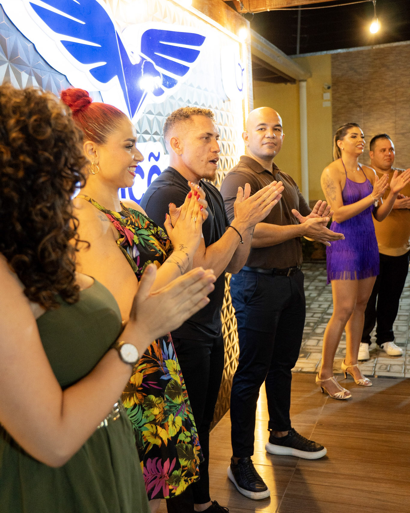
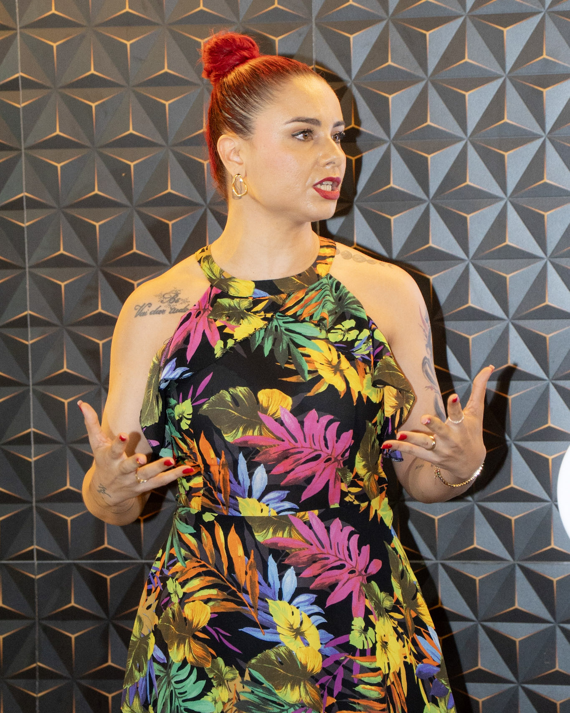
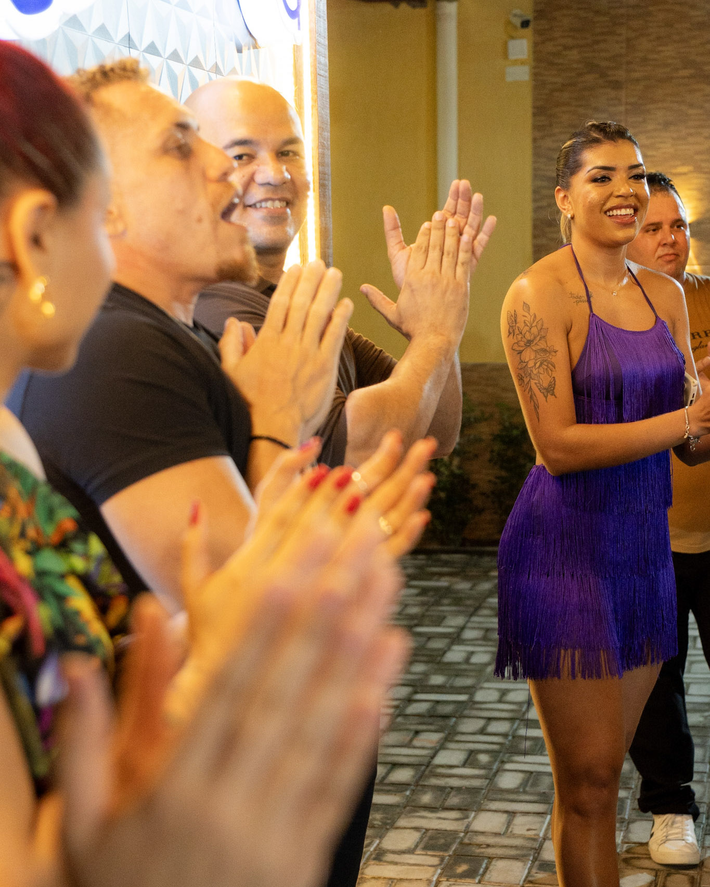
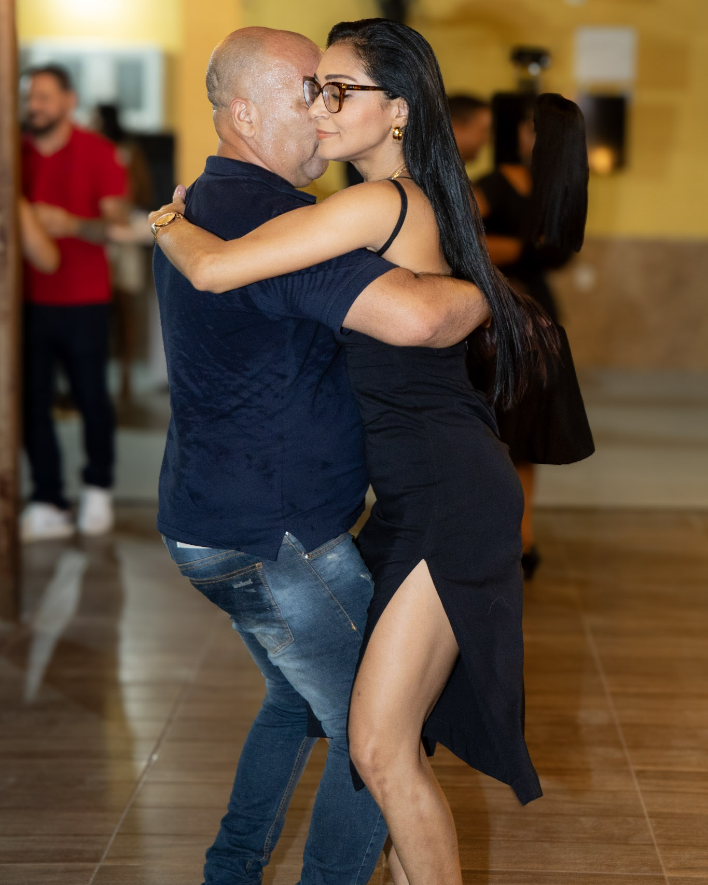
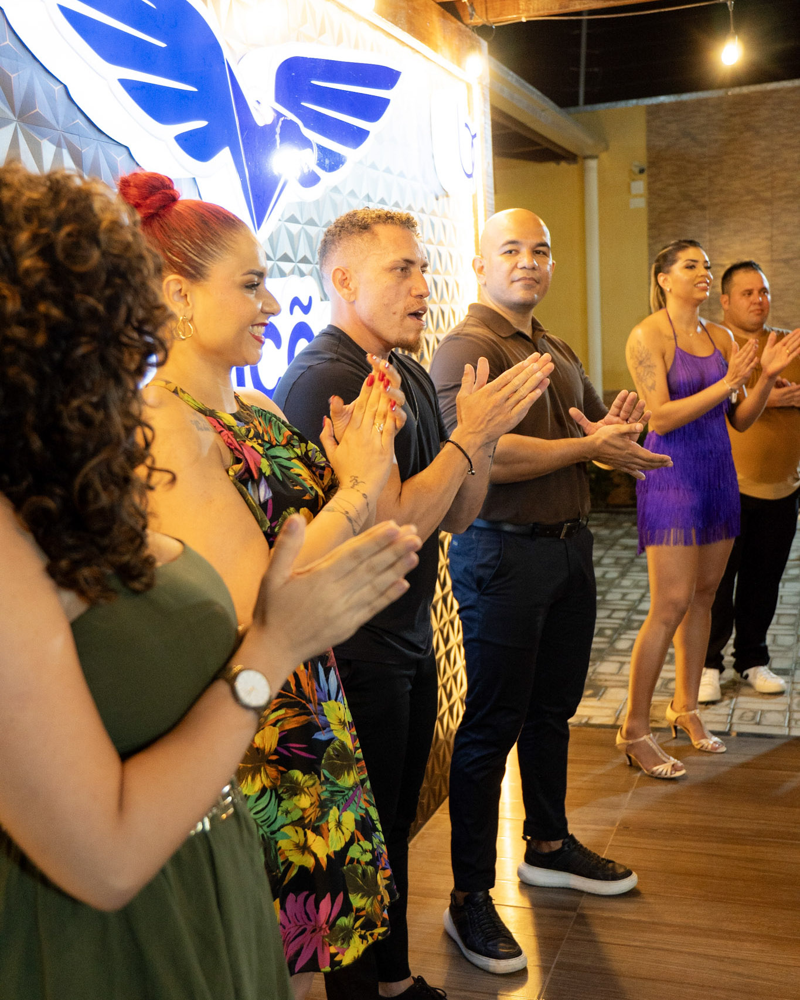
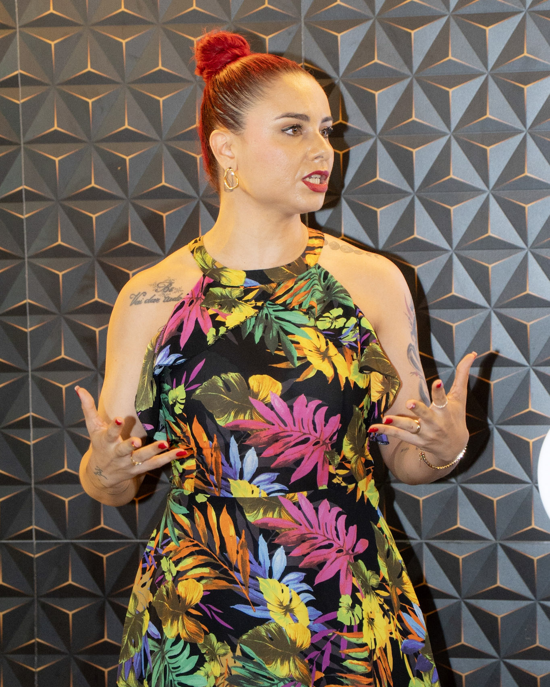
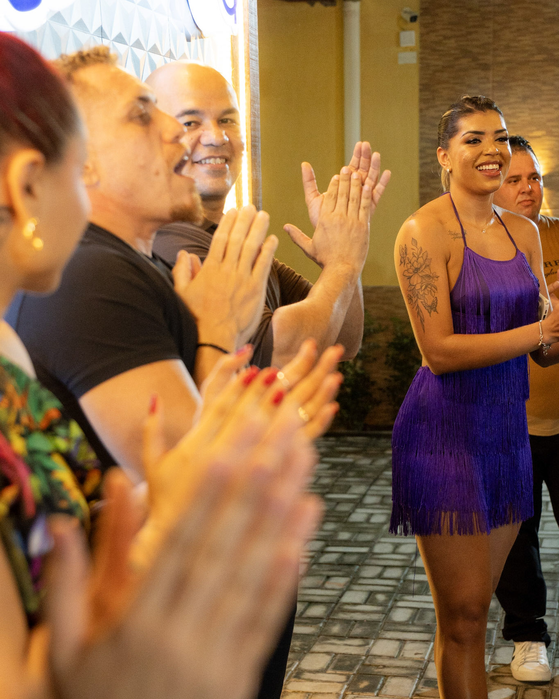
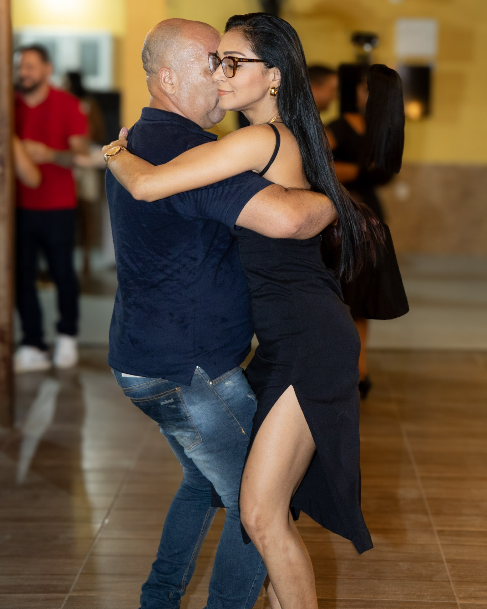

evento | forró
O evento forró com classe 2 edição foi realizado em Pacajus foi uma noite inesquecível, repleta de energia, música e muita dança. Desde o início, a animação tomou conta do espaço e todos estavam prontos para viver momentos de alegria e celebração.
A festa contou com a condução especial dos professores Gabriel e Vanessa, que trouxeram toda a sua experiência e carisma para animar o público. Além deles, diversos dançarinos da região marcaram presença e fizeram do evento um verdadeiro espetáculo de ritmo e movimento.
Para nós, da INTS Fotografia, estar ali registrando cada detalhe foi um grande prazer. Cada clique não mostrava apenas passos de dança, mas a vibração e a intensidade de uma noite que ficará na memória de todos os participantes.
Encerramos esse trabalho com a certeza de que fizemos parte de algo único. Que venham muitos outros encontros como esse, sempre cheios de música, animação e a beleza contagiante do forró. Foi uma honra eternizar cada momento dessa celebração cultural.
 






